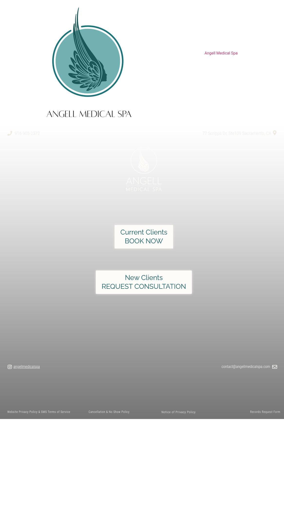

A distinct identity
The Angell name and wing mark give the practice a recognizable visual starting point.
Prepared for Angell Medical Spa / Sacramento, California
Your current-client booking is already connected to Boulevard. The opportunity is to give someone discovering Angell the same clarity: who they will meet, what to consider, and exactly what happens next.
The opportunity + our fixes ↘Your actual brand. A more complete introduction.
01 / The good. What we would build on.
The Angell name and wing mark give the practice a recognizable visual starting point.
Current clients already have a dedicated Boulevard route. We would build around that existing system.
The homepage consistently identifies the Scripps Drive location and a direct phone number.
A Sacramento team for the site, the content and the campaign.
 AIMS Sports Recovery ↗
AIMS Sports Recovery ↗ Megan Meyerdick · Precision Home Loans
Megan Meyerdick · Precision Home LoansThe live page gives existing clients a shortcut. A new visitor gets very little visible context before choosing whether to make contact.
The rendered homepage in our October 20 browser review showed contact details, booking buttons and policies, without a visible practitioner introduction, treatment navigation or office hours. Search extraction still surfaced an older service paragraph, so the visible experience and indexed text differ.
Live homepage / visible-page review ↗Build a concise homepage with a practitioner introduction, priority treatment paths, location hours and approved proof. Confirm whether the current page is an interim rebuild before replacing anything.
The new-client button points to a Google Form; returning clients are sent to Boulevard. The homepage does not set an expected response time for a new inquiry. This is a different path, not proof that the form fails.
New-client destination linked from homepage ↗Give new clients a branded consultation page, explain the response window, and connect the approved next step to the clinic’s actual scheduling process. Test the confirmation and staff handoff.
The visible contact address is contact@angellmedicalspa.com, while its email link opens schedule@angellmedicalspa.com. Both may be valid, but the mismatch makes the intended inbox unclear.
Homepage email link / observed October 20 ↗Confirm which inbox the team monitors, then align the displayed address and email link. Add a clear purpose for scheduling versus general questions.
The large logo leads the desktop page while key details sit farther down. Bring a useful introduction and the new-client route into the first screen.
Build approved, service-specific pages rather than relying on a broad paragraph in search extraction. Link each to a relevant consultation step.
Introduce Dr. Angell and the team in plain language, with current roles and credentials confirmed by the practice before publication.

Every primary finding above points to the page reviewed. These observations describe the sampled public pages and browser session. They do not establish lost inquiries, campaign performance or every visitor’s experience.
View the practice website ↗Benchmark the current site on a controlled mobile profile, then test image loading, navigation and the first useful action. No fresh Lighthouse or Core Web Vitals score is asserted in this proposal.
Confirm the owner-approved name, address, hours and booking link against the live profile. Review recent feedback and response handling. No directory count is presented as a fresh Google-verified total.
Review the linked official profiles, recent post dates, formats and useful engagement with account access. A quiet website blog or missing embedded video does not establish that social content is inactive.
Inspect current campaign ownership, conversion definitions and consent behavior. Public page tags alone cannot prove active spend, missing tracking or successful attribution. Preserve working tools and test the actual handoff.
Use Search Console and a repeatable local query set to establish a baseline. Improve practitioner, service and case context. We do not infer ranking failure or universal AI absence from a single search snapshot.
With the team, test an agreed inquiry from click through confirmation and staff response. This public review did not submit patient information, place calls or make appointments.
The first phase confirms access, approvals and measurement before any paid launch. Proposed work and filming remain subject to the practice’s clinical review, patient permissions, existing vendor responsibilities and an agreed scope.
One clear story, the pages to support it, and real creative to bring it to people nearby. The work is shaped around this practice’s priorities.
Homepage, practitioner introduction, priority treatment pages and a clearly explained new-client route.
A planned on-site session covering consultation questions, the practice experience and clinically approved treatment education.
Once the page and handoff work, test approved video creative for one agreed service in the Sacramento market.
Measure inquiry, staff response and consultation outcome with the tools the practice already approves.
Vessel: strategy, page design and implementation, shoot planning, filming, editing, approved campaign work and reporting.
Your team: clinical accuracy, patient permissions, capacity, access approval and the patient response process.
This is a proposed partnership, not a production commitment. We would agree the page list, filming schedule, deliverable count and campaign responsibilities together before work begins. No patient or business outcome is guaranteed.
Bring the questions, the people and the setting together. A planned shoot should produce useful explanations that feel like the practice.
A calm walkthrough from arrival to consultation. Answer what to bring, how questions are handled and how the treatment plan is agreed.
A practitioner-led explanation of one priority treatment: suitability, limitations, recovery questions and what a consultation can establish.
Simple introductions filmed in the real practice. Show the people and environment a new client is about to encounter.
Concepts only. Any patient appearance or clinical case requires appropriate permission and practitioner review. Treatment suitability, claims and outcomes would be reviewed before publication; no results are promised here.
The sequence matters: agree the story, make the journey work, then learn from real inquiries. Dates depend on access, approvals and scheduling.
Confirm whether the homepage is temporary. Agree the page list and booking handoff. Capture approved practitioner and practice footage.
Launch the agreed pages, test mobile inquiry paths and publish the first approved video series. Start a tightly scoped campaign only after measurement works.
Review response times, consultation outcomes and creative performance. Improve the pages and content around the questions real inquiries are asking.
Start with the new-client journey and one treatment. The rest of the system should follow that decision.
Talk with Vessel ↗teo@vessel-archive.com · Sacramento, California